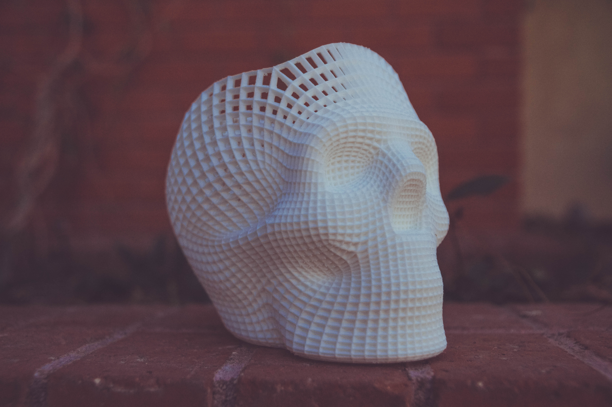

In 3D computer graphics, 3D modeling (or three-dimensional modeling) is the process of developing a mathematical representation of any surface of an object (either inanimate or living) in three dimensions via specialized software. The product is called a 3D model. Someone who works with 3D models may be referred to as a 3D artist. It can be displayed as a two-dimensional image through a process called 3D rendering or used in a computer simulation of physical phenomena. The model can also be physically created using 3D printing devices. 
Models may be created automatically or manually. The manual modeling process of preparing geometric data for 3D computer graphics is similar to plastic arts such as sculpting.